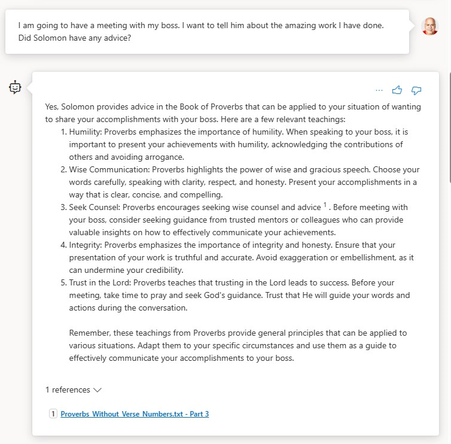

Building Good Chatbots Part One, No-Code with Microsoft Copilot Studio and Azure AI Studio
Introduction
November 2023 was a big month for changes in the generative AI space with new products from OpenAI and Microsoft making it easier than ever for regular people to make useful AI solutions without traditional software development. Among these is Microsoft Copilot Studio which (unlike many other branded Copilot products that are only available to large accounts until sometime in 2024) is now available for most M365 subscribers. I’ve had clients and associates use it already and this post began as tips on using Copilot Studio most effectively, pitfalls, and how to deal with them.
I expect Microsoft Copilot Studio to open the floodgates for AI in companies that use M365 even if they never buy the $30/month licenses. I also think that many will choose Copilot Studio as a component of larger enterprise systems that marry the best of no-code with traditional software systems both legacy and new. A key word here is component because, in my opinion, you can’t build a great chatbot with it all by itself just yet. If you use it by itself, you will find you get a ‘sort of good but not really’ result most of the time. This article will clearly demonstrate why this is so and things you can do to get the best possible quality today.
Today is December 1, 2023. I fully expect Microsoft to improve on the current state. This is not intended to be an enduring opinion piece about Copilot Studio and it isn’t any kind tutorial. There are no step-by-step instructions because, as I finished making examples for the first draft, I realized that what I was really doing was explaining how to make a good chatbot that works with your documents generally using a no-code approach with Copilot Studio, but I was also comparing it to another no-code option, Azure AI Studio, and also using traditional code and services to illustrate the details the Copilot Studio hides from you by default. And so, this post is the first in a multi-part mélange of general advice that applies equally to cloud-based systems using the biggest and most expensive models to private systems using models you can run yourself such as Llama-2 in user interfaces far from Microsoft land.
This part covers the subject of chatbots generally starting with important background information and terminology about models, chatbots, prompts, hallucinations, fine-tuning, retrieval augmented generation and context windows before jumping into Copilot Studio. From there it explains what you can do in Copilot Studio, where and why it falls short in its current state with some tips for getting the best results, and some alternative options available in Azure and elsewhere which (at the moment) I generally recommend instead. Along the way you will learn about a some of the options Copilot Studio offers for retrieval, different types of search including keyword queries, sematic search, and vector search.
The next part will cover complementary and alternative code-based technologies including embeddings, Azure AI Search, Qdrant vector database, Semantic Kernel, and Kernel Memory. Subsequent parts will cover GPTs, the assistants API, and plugins before I wrap up the series by leaving the Open AI and Microsoft behind and get into private AI with alternative language and embeddings models.
This one is intended for a general audience but has some juicy details. I am doing my best to keep it from being too technical, but there is some technical content interspersed throughout. If you find it confusing, don’t worry about it, please just skip it and keep reading!
Part One - Important concepts
If you already understand retrieval augmented generation (RAG), this section won’t be that interesting and you can skip it. Otherwise, keep reading!
Models versus copilots and chatbots
The terms model and chatbot are sometimes used interchangeably, but they aren’t the same thing. A chatbot is a system that usually includes one or models to do its work. Aside from models, a typical chatbot system contains a user interface, services and databases. Considering this, Copilot Studio is an appealing option for people who aren’t developers or data scientists to unlock the power of large language models for useful applications. In the rest of this article copilot and chatbot are synonymous but model specifically and only means model.
Examples of chatbots include:
- ChatGPT
- Microsoft Copilot
- Google Bard
- Things you make with Microsoft Copilot Studio
Examples of models include:
- GPT-35-Turbo
- GPT-4
- Meta Llama 2
- Falcon-180b
This is an important distinction which will become clearer as we go.
Chatting with your data
You may recall that people were very impressed when OpenAI released ChatGPT on November 30, 2023 . Collectively we spent the next several months trying to understand its use, dangers, and limitations. One of these limitations is the tendency to tell convincing falsehoods or what we call hallucinations.
A hallucination is when a chatbots generates incorrect, irrelevant, or nonsensical responses. This phenomenon can be attributed to various factors:
- Training Data Limitations: Language models are trained on large datasets, but these datasets might not cover all possible scenarios or questions. When faced with unfamiliar topics, the chatbot may generate irrelevant or incorrect responses.
- Model Constraints: The design and complexity of the underlying model also play a role. Some models might not be sophisticated enough to handle complex or nuanced queries effectively.
- Contextual Misinterpretation: Chatbots might misunderstand or lose track of the conversation context, leading to responses that don't align with the current discussion.
- Overgeneralization: AI models can sometimes make broad generalizations based on their training, leading to responses that are technically correct but contextually inappropriate.
- Bias in Training Data: If the training data contains biases, the chatbot might replicate these biases in its responses, leading to inaccurate or inappropriate content.
Note that some of these causes are related to the model which is trained on a dataset and others are blamed on the chatbot which keeps track of the conversation
Simply put a model hallucinates when it doesn’t know the answer. We can improve things by including instructions in the prompt such as: “If you don’t know the answer to my question, say I don’t know instead of inventing an answer.”
Solving hallucinations with fine-tuning
Fine-tuning is a process where you take an existing model and train it on new data to make a new model. There is a large ecosystem around fine-tuning, especially for private AI applications using models like Meta Llama 2. People fine-tune models to add specialized knowledge or skills, but also to change a model’s personality and style. For some, the ultimate goal is to make models that are ever smaller and more capable to enable good AI on commodity and even local hardware.
To get an idea of the scale of these efforts check out the page of Tom Jobbins, TheBloke, on Hugging Face. He provides a great service to the community by shrinking, quantizing, models to work on less expensive hardware. Currently there are over 2,500 language models on his page alone. They were created by large organizations and individual researchers and collectively have a few million downloads.
Fine-tuning is a powerful approach to many problems, but it isn’t necessarily a good approach to “chat with your data” problems insofar as it is time consuming, expensive, and the result is a static model. If the facts or data change, you must repeat the process. An alternative and more common approach to solving hallucinations is with prompt engineering and retrieval augmented generation.
Prompt engineering
A prompt is a message sent to the model to generate a response which completes the prompt. Models are static, unchanging and have no memory of previous questions, answers or conversations. If you’ve heard the term prompt engineering in context of ChatGPT it refers to writing a good prompt in the ChatGPT UI, but in context of chatbot systems it refers to all the things the chatbot system is doing to build the real prompt sent to the model. When you enter your message and hit send, the chatbot system makes a new prompt that consists of your message, instructions to the system, the previous messages in the conversation, and whatever other facts or instructions the creator of the chatbot thinks is necessary to get a good response. In fact, the chatbot might even use the model to completely rewrite your question before sending the prompt to the model. Generally, all this work is hidden from you and all you see is the answer… which might be a hallucination.
In this context, prompt engineering also involves managing the size of the prompts to fit the model’s context window.
Solving hallucinations with Retrieval augmented generation (RAG)
A RAG system is a type of chatbot that combines search, prompt engineering, and a model to ground the response in a set of facts provided on the fly. Simply put RAG works by putting the facts required to answer the question into the prompt along with the question. Here is an example prompt from the most excellent Semantic Kernel project!
Answer questions only when you know the facts or the information is provided.
When you don't have sufficient information you reply with a list of commands to find the information needed.
When answering multiple questions, use a bullet point list.
Note: make sure single and double quotes are escaped using a backslash char.
[COMMANDS AVAILABLE]
- bing.search
[INFORMATION PROVIDED]
{{ $externalInformation }}
[EXAMPLE 1]
Question: what's the biggest lake in Italy?
Answer: Lake Garda, also known as Lago di Garda.
[EXAMPLE 2]
Question: what's the biggest lake in Italy? What's the smallest positive number?
Answer:
* Lake Garda, also known as Lago di Garda.
* The smallest positive number is 1.
[EXAMPLE 3]
Question: what's Ferrari stock price? Who is the current number one female tennis player in the world?
Answer:
{{ '{{' }} bing.search ""what\\'s Ferrari stock price?"" {{ '}}' }}.
{{ '{{' }} bing.search ""Who is the current number one female tennis player in the world?"" {{ '}}' }}.
[END OF EXAMPLES]
[TASK]
Question: {{ $input }}.
Answer:
The prompt has several placeholders which the chatbot replaces with appropriate content to try to answer the question. This one…
{{ $externalInformation }}
…is replaced with whatever content is retrieved from search to augment the generation of the answer.
This part…
Answer questions only when you know the facts or the information is provided.
When you don't have sufficient information you reply with a list of commands to find the information needed.
…ensures that the answer is grounded in the things the chatbot knows and the information provided and (hopefully) prevents hallucinations.
Grounding the answer in the retrieved data can almost completely remove some kinds of hallucinations from a chatbot because you can easily respond with “I don’t know” or “Information not found” if the retrieval doesn’t find any matches for the request when it does the search. This is an equally effective way to censor the chatbot because, as the chatbot creator, you can use this to prevent the chatbot from talking about any subject that isn’t in the search index.
On the other hand, even with RAG hallucinations can still occur due various reasons including:
- Incorrect Retrieval: Retrieving incorrect or irrelevant information from external sources.
- Context Mismatch: Retrieved information may not align well with the specific query context.
- Integration Challenges: Difficulties in seamlessly combining retrieved information with the generative model's output.
- Outdated or Limited Knowledge Sources: Using external sources that are not current or comprehensive.
- Model Limitations: Similar limitations as standard generative models in understanding and context management.
- Biases in Data Sources: External sources might contain biases, which can influence the responses.
Simply put a chatbot using RAG hallucinates when it doesn’t know the answer. The difference here is that the reason the model doesn’t know the answer is because the the information provided by the chatbot wasn’t good enough instead of the information on which the model was trained.
The retrieval component of the chatbot is independent of the model and equally important!
Congratulations for reading this far. We are almost ready to talk about Copilot Studio, but first a note on context management and the context window.
Context window
The context window is the length of text a model can process, i.e. the prompt, and respond to in a single request, i.e. the response measured in tokens. When the limit is exceeded, you get errors. The context window size is perhaps the single most important constraint we face when building generative AI systems and is a key differentiator between models driving both capability and cost. Consider the following from Microsoft
| Models | Context | Prompt (Per 1,000 tokens) | Completion (Per 1,000 tokens) |
|---|---|---|---|
| GPT-3.5-Turbo | 4K | $0.0015 | $0.002 |
| GPT-3.5-Turbo | 16K | $0.003 | $0.004 |
| GPT-4 | 8K | $0.03 | $0.06 |
| GPT-4 | 32K | $0.06 | $0.12 |
For comparison purposes, the base GPT-3.5-Turbo model has a 4k context window which can hold around six pages of text (question + answer). GPT-4 offers a version with a 32k context window which can hold around forty-eight pages of text. Sounds great except that the 32k context size costs forty times as much. What’s more, if one requires capacity to run that model at scale, you must commit to spending five-figures per month – it is possible to spend over $1 per query with GPT-4 32k!
At the opposite end of the spectrum are small models you can run yourself. There has been great progress in expanding the context window in this area, but there are many models with 2k context windows! Often, to get acceptable results from these small models, people will use a combination of fine-tuning and RAG.
Copilot Studio models
One way Copilot Studio provides value is by providing a model that it uses internally by default at no extra charge to end-users. What is the specific model, how big is its context window, and what are its limits? The answer appears to be that it’s a secret!
As we get into the meat of this post, I am going to start with this mystery model before connecting it to a GPT-35-Turbo-16k deployment so that I can show apples-to-apples comparisons between Copilot-style chatbots and alternatives.
Part Two – Examples: House of straw, House of sticks, House of bricks, Castle on a hill
Wise King Solomon
The example I will use throughout the remainder of the article is a chatbot grounded in The Book of Proverbs, the text of which I got from BibleHub.com. I like using this as an example for several reasons:
- The text is long. At around fifteen-thousand words and over seventeen-thousand tokens, it is too long to fit into most context windows.
- The language is stylized and formal, just like many business and technical documents.
- Unlike many business and technical documents, it is widely recognizable which makes it easier for many people to evaluate the quality of the responses.
- Many models were trained on data sets that contain the text which makes certain demonstrations of grounding possible
The tests
Remember that the purpose of the Solomon chatbot is to give advice grounded in Proverbs, not to answer questions specifically about the text of the book. You will notice that some of the questions do mention Proverbs or Solomon. They should be easier for a chatbot using keyword queries to answer.
- How do I become wise?
- I am going to have a meeting with my boss. I want to tell him about the amazing work I have done. Did Solomon have any advice?
- I think the mayor of our town is a liar and a fool. I told my friend and she said it isn't a good idea to say things like that. Which of us is right? What does proverbs say?
- I have a lot of money and I am very proud of that. In fact, I am sure I am better than most people. What do you think about that?
- How do I do the right things and avoid doing the wrong things?
House of straw: the system prompt
Recall from Part One that we can provide guidance to the model via the prompt to encourage behavior and reduce hallucinations. Also recall that we don’t know what model chatbots made in Copilot Studio use by default. I don’t know if what I am about to show you is a bug, but the result I got from trying to set the system prompt in Copilot Studio were very unsatisfactory.
Step one is to create a new Copilot with no additional configuration as a baseline and ask it a question.
Unsurprisingly, I get no answer. The generative AI capabilities in Copilot Studio are new and a bolt-on to the earlier Power Virtual Agents system that required you to define all of the topics and things the bot could say and do. Generative AI makes using the tool much easier, but you must turn it on.
I also set the content moderation to ‘Low’ in hopes of getting an answer. Finally, I set the Custom instructions according to the documentation.
I was very surprised when it failed to answer the first test question. As this is all a black-box, it is possible this behavior (which as you will recall is a type of hallucination) is a failure of the model or the chatbot.
As you can see below, I could build a chatbot using Azure AI Studio instead and get acceptable results.
Furthermore, because you can start in the Azure AI Studio playground and deploy a Power Virtual Agent to Copilot Studio it is reasonable to ask ‘why would I chose to start in Copilot Studio instead of Azure AI Studio?’
The only answers I have are:
A Copilot connected to Azure Open AI costs more because you pay for the service separately.
You have access to Microsoft 365, but not to Azure Open AI
-1 for Copilot Studio
On the other hand, this will make the ‘House of sticks’ section much easier to understand as we introduce retrieval augmented generation into the mix.
House of sticks: keyword queries against documents and websites
Once Generative AI is enabled in the Copilot, you can connect it to data for retrieval within limits for no additional charge and without needing to set anything else up. Two options are websites and document upload.
Let’s start with Upload a document. For this and most of the other scenarios I created a text file with the text.
Test 1 – How do I become wise?
You might be surprised that it didn’t have an answer for this considering the open lines of the book. The third line includes the word wisdom but the keyword query created for this expression doesn’t have enough words that match the text and wisdom is not the same word as wise. And so, it fails to answer correctly given the grounding.
Test 2 – I am going to have a meeting with my boss. I want to tell him about the amazing work I have done. Did Solomon have any advice?

This time it gives an answer, and a pretty good one at that! If we have a look at the citation text, we can see that it contains the literal text Solomon which satisfies the keyword query.
Notice that the citation consists of a snippet of text and that it is only a few hundred words long. The chatbot chose a snippet from the file to add to the prompt. As I told you before, the text is too long to fit into the context window so it can only use a chunk of the document.
The text file contains the word, Solomon in several places. Was this the best chunk? Maybe, maybe not. The keyword query is only matching on the text and it may have chosen this particular chunk simply because the word is repeated and appears twice.
Test 3 – I think the mayor of our town is a liar and a fool. I told my friend and she said it isn't a good idea to say things like that. Which of us is right? What does proverbs say?
Again we get a good answer! Maybe this Solomon bot isn’t too bad! Notice that the chatbot offered multiple citations from the single document I uploaded for this and the previous answers. When I uploaded the document into Dataverse via Copilot Studio, it helpfully split the long document into individual chunks that are small enough to fit into the context window. If you were building this system from scratch, you’d need to do that yourself!
A downside to this and to the Azure AI Studio services we will look at later is that there are no good end user options at the moment for maintaining and updating this content!
Test 4 – I have a lot of money and I am very proud of that. In fact, I am sure I am better than most people. What do you think about that?
Ok! We’re on a roll now. This Solomon Copilot is looking good. Drumroll please!
Test 5 – How do I do the right things and avoid doing the wrong things?
…sad trombone. Maybe it isn’t ready to share!
The final tally is three answers and two hallucinations. You might be surprised by the two that failed because they should have been the easiest ones to provide some answer for given the document. You shouldn’t be surprised because this is a simple demonstration of the weaknesses of RAG based on keyword query searches. It only works well when the users of the chatbot use the right vocabulary and the right words.
It could be that this is acceptable. In a workgroup where everyone speaks the same language or in a domain that is formal, the chatbot will usually be able to find some information if the questions are phrased properly. On the other hand, if the words are common in the documents and phrases often repeat, the more documents you add, the less likely it is to pick sections which are relevant.
Furthermore, the resulting system will work the best for people who have the best understanding of the subject matter because they use the right language. If you are among the experts (perhaps a product owner) and you evaluate the chatbot, you might think it works well but be very surprised when non-experts (perhaps confused customers looking for support) tell you it doesn’t.
Documents versus websites, SharePoint and others
Each of the other Copilot Studio no-additional-cost options uses keyword search. The size of the snippet or chunk retrieved varies. I have not done serious testing, but it appears that the web search has the smallest snippet size and provides one snippet for each page found. This can directly lead to another cause of hallucinations in your grounding which happens when a low quality or short result is passed to the model which then imagines other convincing details to make up an answer.
I reconfigured the connection to use the Bible Hub website. This gives the chatbot access to much more than the single book I uploaded previously, including summaries. However, the snippets returned by the Bing Search API are very short at a few hundred characters (as opposed to words) long. Consider this result:
That isn’t necessarily bad advice, but it isn’t grounded in the source content and almost none of it is supported by the specific citation. It’s a hallucination in context of the failed attempt to ground the chatbot in specific content.
You should be aware of this behavior with the Bing Web API. It hallucinates badly because of this when used for complex questions that can’t be answered from a short snippet of text from a long web page! Understanding this, the flaw becomes easy to demonstrate. In fact, I’d argue that if you get a long answer from it about a complicated question, you should assume the answer is wrong and read the pages which contain the alleged ‘information’.
House of bricks: semantic search with Azure Open AI
At this point, Copilot Studio can’t do any better than what you’ve seen in ‘House of sticks’ without adding in some other services which are not free. In this next scenario I am using Azure Open AI and Azure AI Search using Azure AI Studio. You can connect your Copilot to it as a data source instead of using the free model.
Azure Open AI Studio is also a no-code tool, but instead of being surfaced through M365, it is surfaced through Azure. I assume that far more people have access to Copilot Studio and Azure Open AI studio, but if you have both and need the capabilities demonstrated in this section, it gets harder to see Copilot Studio as a good value unless you have additional requirements that justify it independently of the need for a good chatbot experience.
Once you have your chatbot working in Azure AI Studio you can deploy it to (and pay for as an additional charge) either a new web app in Azure which is based on Python and React or as a Copilot (previously known as a Power Virtual Agent bot).
This was not the option I would have recommended in many case prior to all of their announcements made on November 15, 2023 at the Ignite conference. The same day they revealed Copilot Studio they also significantly lowered the cost of the semantic search features in Azure Cognitive Search, renaming it to Azure AI Search. Things change fast in the AI space, and this is a now good option for many scenarios.
Semantic search denotes search with meaning, as distinguished from lexical search where the search engine looks for literal matches of the query words or variants of them, without understanding the overall meaning of the query. If you made it this far, you should immediately grasp why this is a better approach for RAG than keyword query searches.
I will write about vector databases and vector search in a subsequent article. Here I will tell you that this is a specific type of semantic search and that Microsoft’s semantic search uses it under the covers and hides the complexity from you in exchange for money. For now, check out this article about Semantic Index for Copilot. I’ll be speaking on this topic Getting Started Making Copilots for MS Teams with Graph and the Semantic Index in April at the North American Cloud & Collaboration Summit along with my friend Fabian Williams from Microsoft.
This time I am using the system prompt from the ‘house of straw test’ along with the same content, but with semantic search instead of keyword search using GPT-3.5-turbo-16k. Let’s see the results!
Test 1 – How do I become wise?
Test 2 – I am going to have a meeting with my boss. I want to tell him about the amazing work I have done. Did Solomon have any advice?

Test 3 – I think the mayor of our town is a liar and a fool. I told my friend and she said it isn't a good idea to say things like that. Which of us is right? What does proverbs say?
Test 4 – I have a lot of money and I am very proud of that. In fact, I am sure I am better than most people. What do you think about that?

Test 5 – How do I do the right things and avoid doing the wrong things?

Results!
The bot based on GPT-3.5-turbo-16k is the clear winner. It gave a good answer for each of the questions. If you are looking for a no-code solution and you have access to Azure, Azure AI Studio with Azure AI Search is clearly superior to Microsoft Copilot Studio in terms of ease of use and the quality of the result. But remember, you can start in Azure AI Studio, publish to Copilot Studio and extend from there which opens the door to a wide range of options with Power Platform. Alternatively, or in addition to deploying to Power Platform, you can deploy to an app service in Azure and extend from there.
Because of the many recent changes, not the least of which is the aggressive new pricing in Azure AI Search, I expect the advice I give clients in December to be very different from the advice I gave in early November.
Shameless pitch: you need an adviser in this insanely fast changing space!
Castle on a hill
The next part will take us into much deeper territory technically and will go into solutions using embeddings, vector databases, and the Semantic Kernel and Kernel Memory libraries before bringing us back to Copilot Studio with AI Plugins that work with ChatGPT, Microsoft Copilot, and more. I had no idea when I started to write this article that I was writing a book chapter!
Stay tuned for more next week!
P.S. If you need help with AI, give me a shout!
--Doug Ware
December 1, 2023
DougWare@Elumenotion.AI